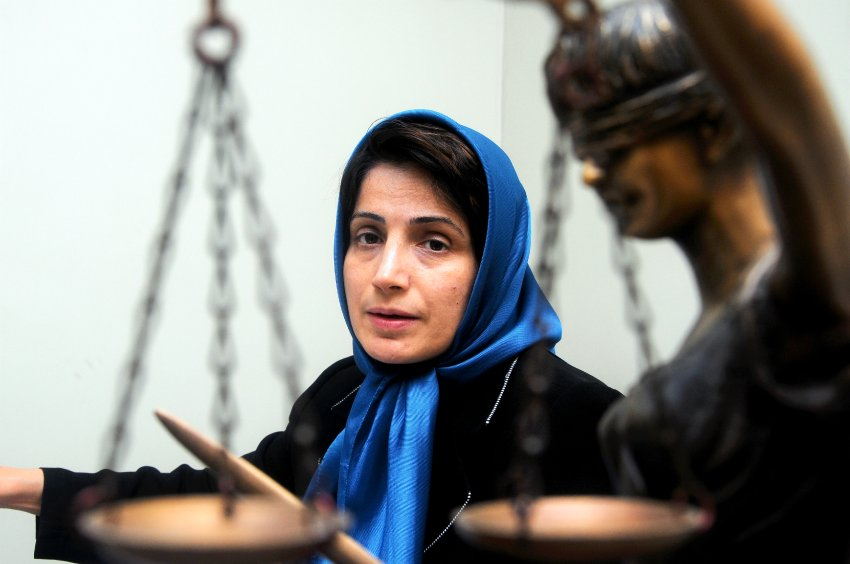

|
|
ایراد شکلی به نحوه اداره جلسه دادگاه، انحلال دادگاه و صدور 5 روز حبس تعزیری برای نسرین
دو شنبه6 دی 1389

تغییر برای برابری - هرچند مقرر شده بود که امروز دوشنبه، 6درماه، قرار بود دادگاه نسرین ستوده به صورت علنی در شعبه 26دادگاه انقلاب برگزار شود، اما جلسه دادگاه با توجه به ایراد شکلی نسرین ستوده و وکیلش به نحوه اداره جلسه مختل شد و قاضی پیرعباسی، رئیس دادگاه نسرین ستوده را به 5 روز حبس تعزیری محکوم کرد.
به گفته وکیل نسرین ستوده، آوردن دوربين فيلم برداری به جلسه دادگاه بدون اينكه هويت نهاد فيلمبرداري کننده روشن باشد و و اخراج يكي از وكلاي بنام كه در جلسه دادگاه حاضر شده بود، موجب اعتراض خانم ستوده و وی شد. به گفته همسر نسرین ستوده، اعتراض نسرین باعث شد قاضي پيرعباس خانم ستوده را به 5 روز حبس تعزيري محكوم كند.
مهنار پراکند، وکیل نسرین ستوده، درباره اتهام وارده به موکلش گفت: عنواني اعلام نكردند ولي تبصره خاصي كه به آن اشاره شده عنوان "تظاهر به بيحجابي" دارد و ما به دليل نوع اتهام اعلام شده نظر به عدم صلاحيت دادگاه داشتیم كه این موضوع را با ذكر دلايل اعلام کردیم .
لازم به ذکر است که پیش از این نسرین ستوده، در شعبه ٢۶ دادگاه انقلاب، به ریاست قاضی پیرعباسی، به اتهامات «اقدام علیه امنیت ملی»، «تبلیغ علیه نظام» و «عضویت در کانون مدافعان حقوق بشر» محاکمه شده بود و دادگاه روز 6 ام دی ماه بر اساس اتهام جدید وی "تظاهر به بی حجابی" تشکیل شده است.